Heat
~105°F midday. Workable, not office-cool. Radiant barrier + exhaust fan + lighter paint. Back soffit vents already feed the roof bay to the ridge — don't block them. No AC. Humid SC summers — no swamp cooler.
Outside Shed Project
Bike / house-project workspace. DIY. Cordless tools only.
Next action
Dusk or dawn. Wait, scrape remnants, reseat gutter guards. Don’t start eave or roof work until it’s gone.
~105°F midday. Workable, not office-cool. Radiant barrier + exhaust fan + lighter paint. Back soffit vents already feed the roof bay to the ridge — don't block them. No AC. Humid SC summers — no swamp cooler.
None on site. Cleanup: USB-C bank (~70–100 Wh) or tool-battery fan. Shop vac uses a temporary outdoor GFCI cord. Modest solar later.
16 × 12 ft foundation, 87" to the bottom of the block. 2×6 sill, 2×4 studs, double top plate. Seal = hardware cloth + flashing/skirt. Move the downspout. No foam-only.
Read live from TODO.md on this repo. Check a box, commit to main, refresh this page.
Second opinion on the plan: SECOND-OPINION.md — water at the ground first, a much bigger fan, foil earlier, and four locked calls worth re-checking.
Loading TODO.md…
What we’re working with. Click to enlarge.
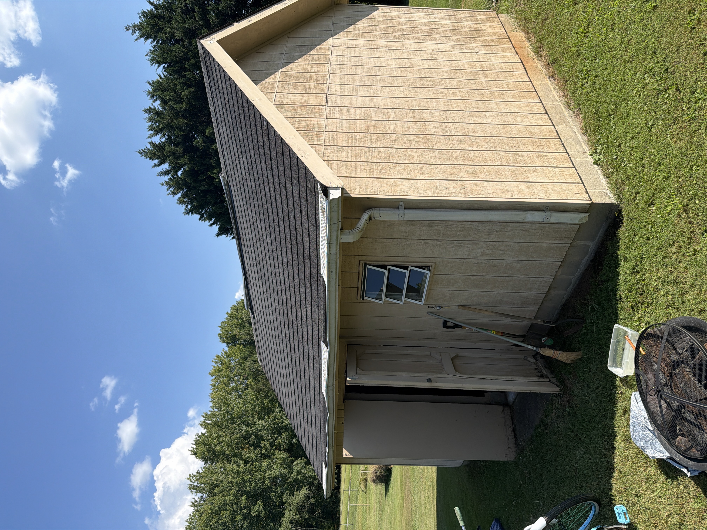
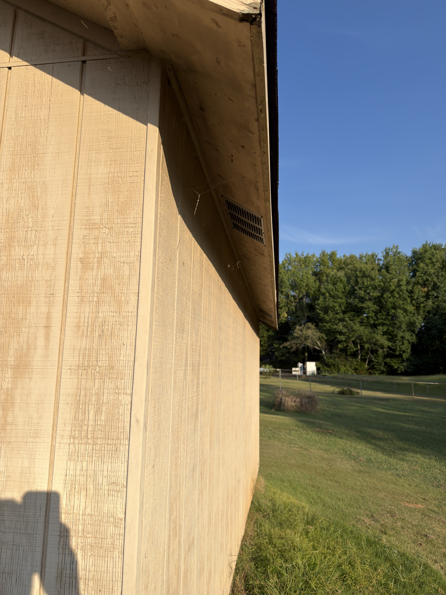
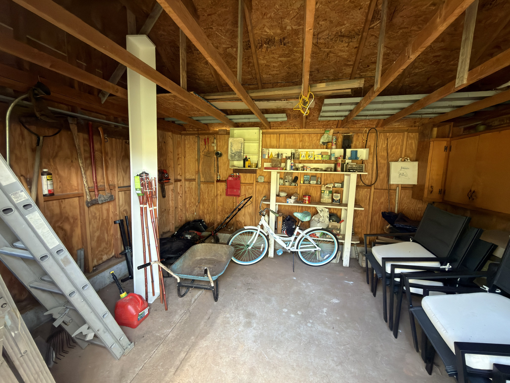
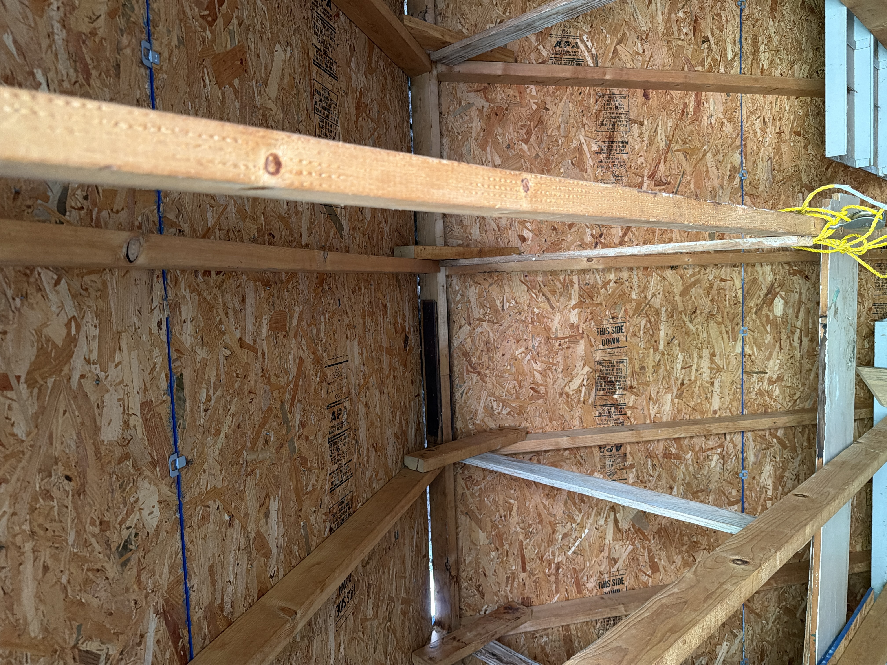
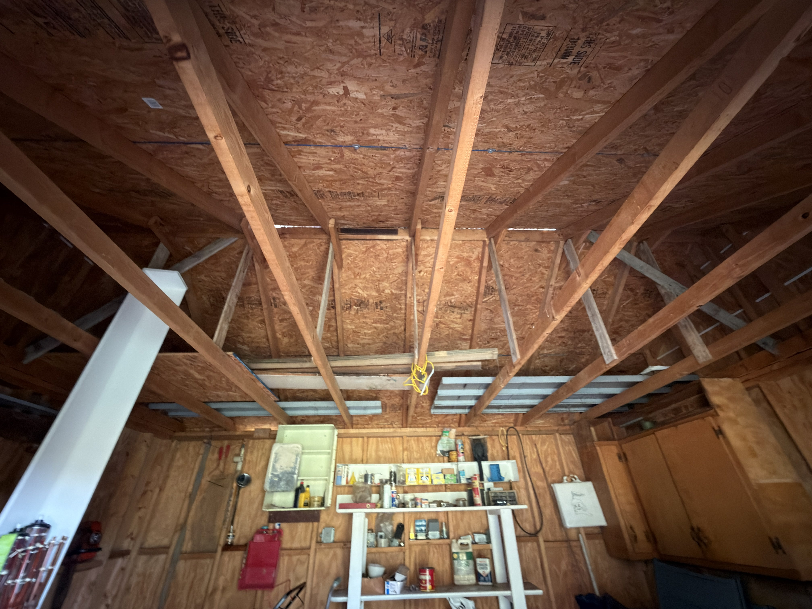
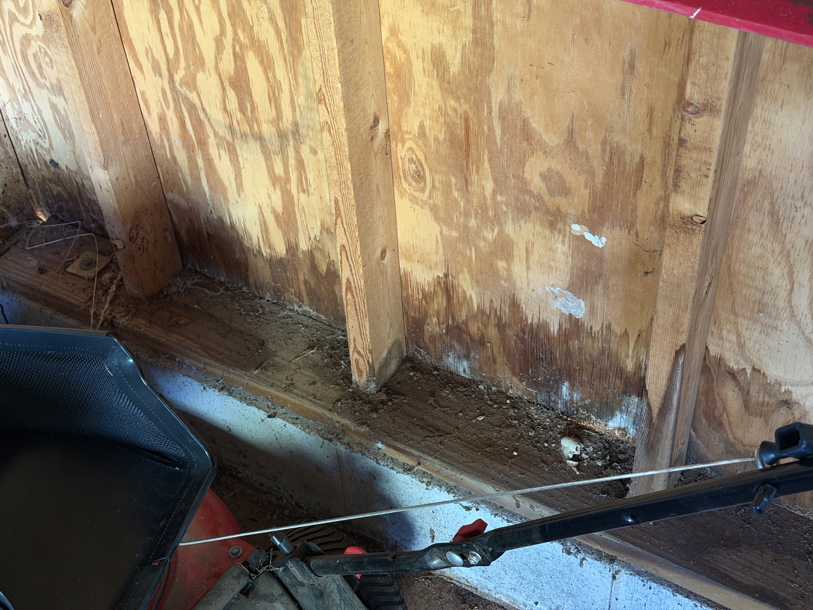
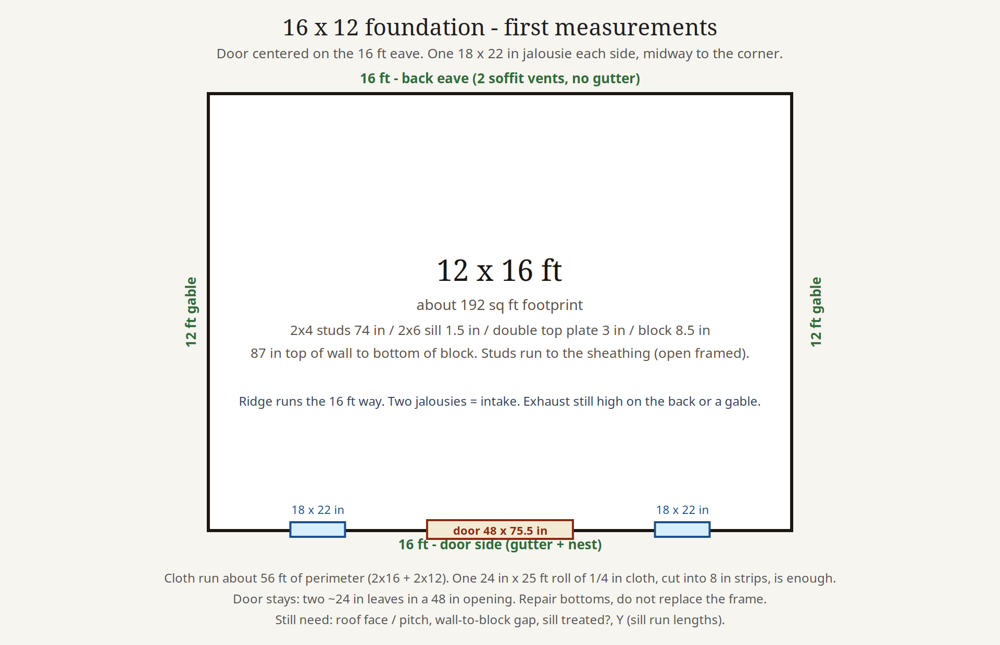
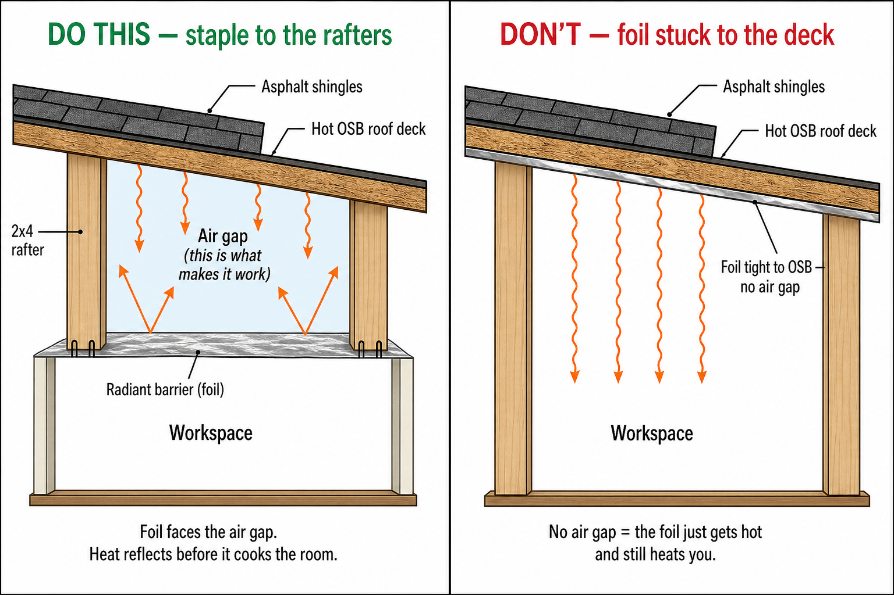
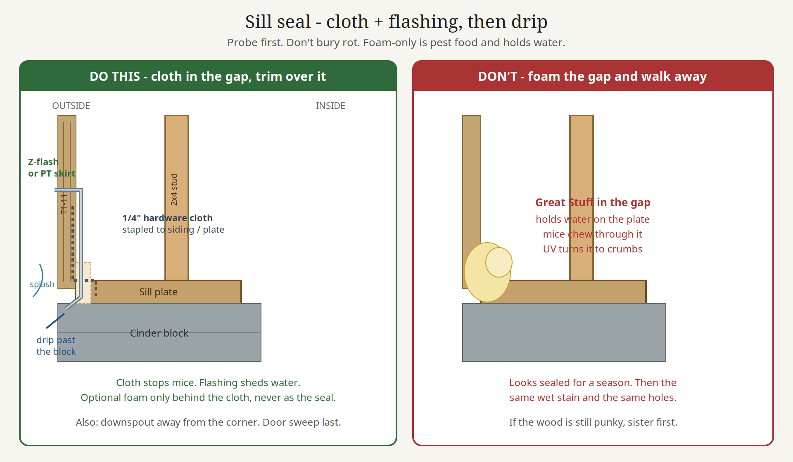
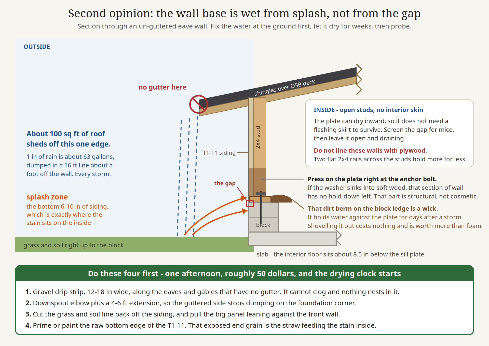
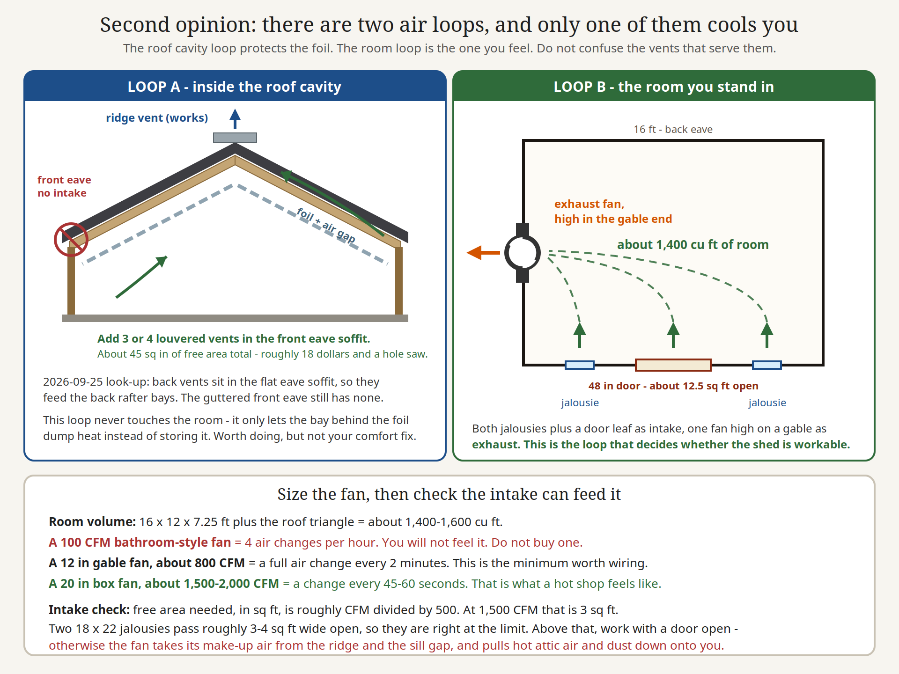
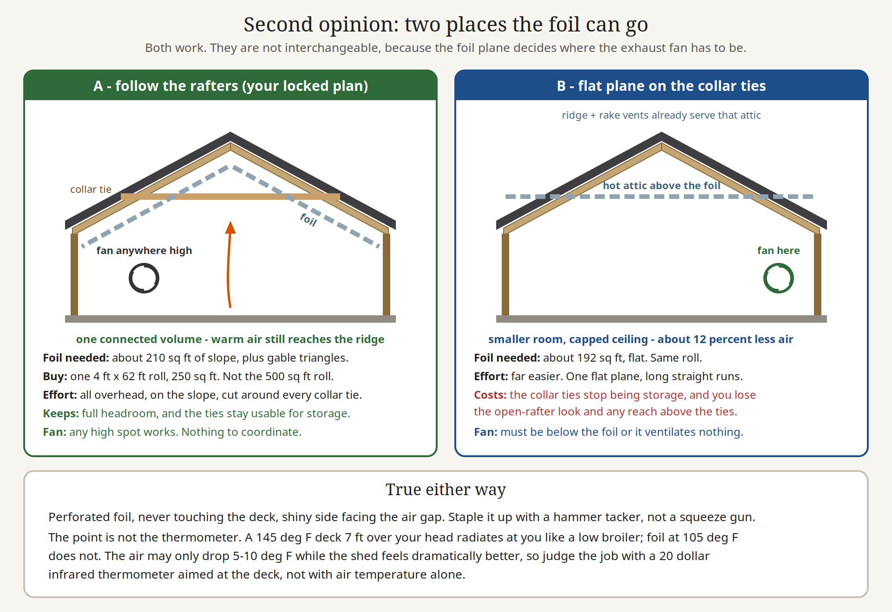
Newest first, from NOTES.md.
Loading NOTES.md…
{kind=link}
{kind=link}
{kind=link}
{kind=link}
{kind=link}
{kind=link}